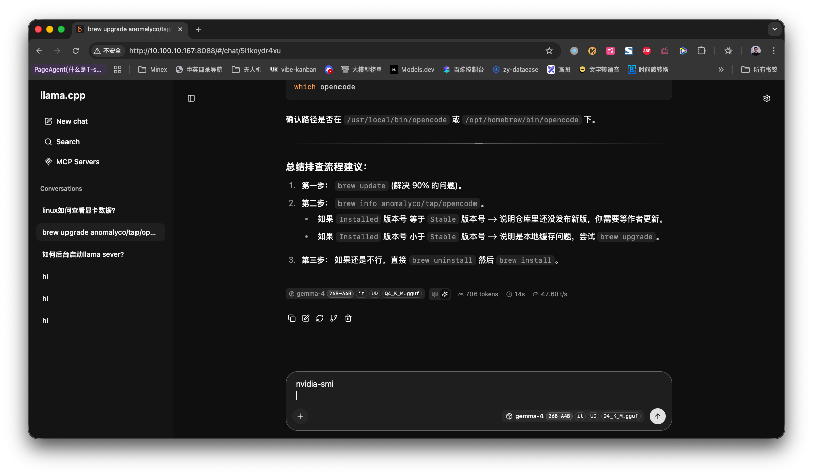

LlamaCpp Run Gemma-4-26B
Guide to setting up Gemma-4-26B model with LlamaCpp on Linux for use with Opencode.
Introduction to LlamaCpp and Gemma-4-26B :ATTACH:
LlamaCpp is a C++ implementation of the LLaMA language model, optimized for performance and compatibility. This guide covers setting up the Gemma-4-26B model with LlamaCpp and configuring it for use with Opencode.

Installing LlamaCpp
First, you need to build LlamaCpp from source. Follow these steps to install on Linux:
-
Prerequisites
Make sure you have the necessary build tools installed. On most Linux distributions, you’ll need:
- GCC or Clang compiler
- CMake (version 3.12 or higher)
- Git
- BLAS library (optional, for better performance)
On Ubuntu/Debian systems, use:
sudo apt update sudo apt install build-essential cmake git libblas-devOn Fedora/RHEL systems, use:
sudo dnf install gcc gcc-c++ cmake git blas-develOn Arch Linux, use:
sudo pacman -S base-devel cmake git blas -
Clone the Repository
Clone the LlamaCpp repository:
git clone https://github.com/ggerganov/llama.cpp.git cd llama.cpp -
Build the Project
Build the project with the following commands:
make # Or alternatively, use CMake: # mkdir build && cd build && cmake .. && makeFor GPU acceleration (optional), you may want to build with CUDA support. First, check if you have an NVIDIA GPU and the drivers installed:
nvidia-smiIf your system has an NVIDIA GPU with CUDA support, compile with CUDA enabled:
make LLAMA_CUDA=1You may also need to install the CUDA toolkit:
On Ubuntu/Debian:
sudo apt install nvidia-cuda-toolkitOn Fedora/RHEL:
sudo dnf install cudaOn Arch Linux:
sudo pacman -S cuda -
Verify Installation
After compilation, check that the server binary exists:
ls -la build/bin/server # Or alternatively: ls -la server
Running the Llama Server
Start the server with the following command:
nohup ./server -m models/your_model.gguf –port 8080 > server.log 2>&1 &
For the specific Gemma-4-26B model configuration:
nohup /home/liuzijie/llama.cpp/build/bin/llama-server \
-m /home/liuzijie/gemma-4-26B-A4B-it-UD-Q4_K_M.gguf \
-ngl 100 \
-c 202144 \
-t 48 \
--reasoning off \
--host 10.100.10.167 \
--port 8088 \
> server.log 2>&1 &
Access the server via the web UI at: http://10.100.10.167:8088/
Note: Vision and reasoning capabilities are not supported.
The –reasoning off flag is used because the Llama server’s reasoning output format is incompatible with Opencode.
-
Context Size Considerations
Gemma-4 supports up to 256K context length, but using the full context requires substantial memory. Our configuration uses -c 202144, which represents approximately 80% of the maximum 256K capacity (262,144 tokens).
We chose 202144 as a balanced value that:
- Provides extensive context window for complex tasks
- Leaves sufficient headroom to avoid memory overflow
- Works efficiently with typical GPU memory configurations
If you encounter memory issues even with this setting, you can further reduce the context length using the -c parameter to decrease GPU memory consumption. For example:
# Reduce context size to 32K to save memory -c 32768 # Or to 64K -c 65536Adjust the context size based on your available GPU memory and requirements.
Configuring Opencode
Configure Opencode to connect to your LlamaCpp server with the following configuration:
{
"provider": {
"llamacpp": {
"npm": "@ai-sdk/openai-compatible",
"name": "llamacpp",
"options": {
"baseURL": "http://10.100.10.167:8088/v1",
"apiKey": "llamacpp"
},
"models": {
"gemma-4-26B-A4B-it-UD-Q4_K_M.gguf": {
"name": "gemma-4-26B-A4B-it-UD-Q4_K_M.gguf",
"parameters": {
"num_ctx": 202144
}
}
}
}
}
}